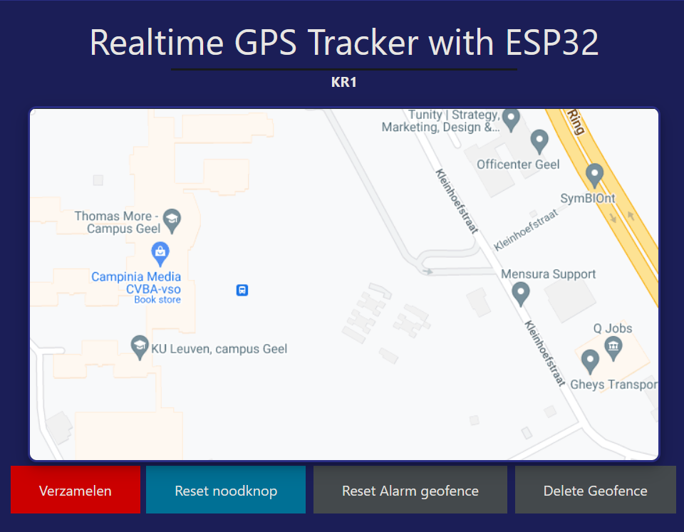

GPS pupil Tracker (Group Project)
Systems engineering & Analysis (Prince2)
My Contributions
My focus was on perfecting and implementing the JavaScript code that seamlessly interacts with the back-end. This task involved not only writing structured and efficient code but also implementing visual enhancements in the User Interface to optimize the overall user experience.
Overview
This project took place within the framework of the Systems Engineering & Analysis course at Thomas More Geel. It involved collaboration with 5 of my classmates. We had to create a proof of concept with the aim of developing an IoT device and application that could track children for a teacher or supervisor. The user (teacher) can define a zone where the children must stay within, and in case a child leaves the zone, both the teacher and the child should receive a notification.
Additionally, emergency buttons had to be provided for both the teacher and the child. Furthermore, everything had to be safe and user-friendly. We accomplished this project by utilizing an Esp32, a Firebase database, and a hosted site that interacts with the database. The choice of this project stemmed from the desire to explore and understand the Scrum process model. It is important to note that our team successfully managed to implement all the must-haves and should-haves, as requested by the client.

What did i learn?
I gained valuable experience working in an agile (Scrum) team environment. This project allowed me to enhance my soft skills such as communication, teamwork, and adaptability. Furthermore, I gained a deeper understanding of how complex project components are developed, interact with each other, and ultimately come to fruition. My focus on perfecting and implementing JavaScript code for the project's user interface not only honed my technical skills but also emphasized the importance of user-centric design in creating a safe and user-friendly solution.